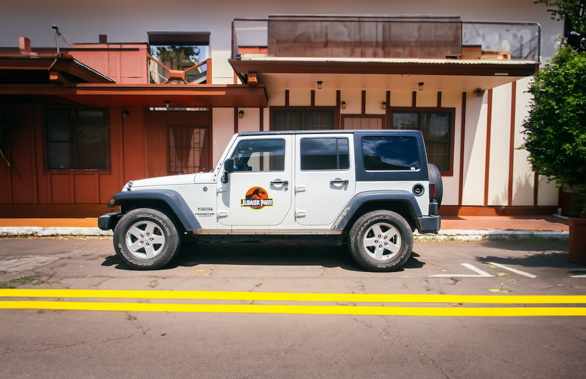

1992 Jeep Wrangler YJ Sahara
Year 1992
Movies: Jurassic Park trilogy and Jurassic World
Significance in film: The 1992 Jeep Wrangler YJ Sahara is probably most associated with the film. The well known red and beige colour mixture symbolises the memorable Wrangler from the films. This is the perfect car to speed down in the jungle away from a T-Rex in while humming the iconic tune.
